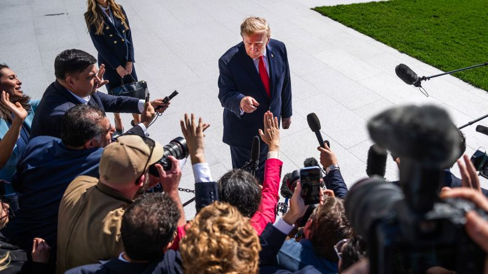
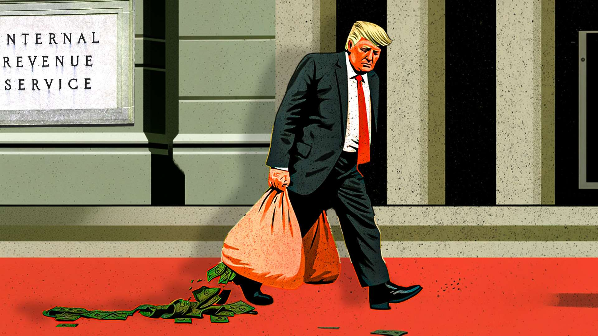
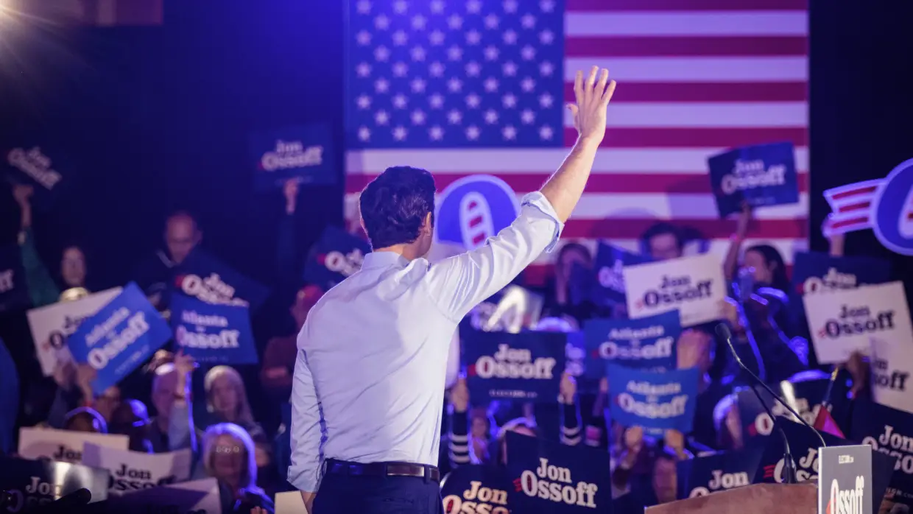

← Back to front pagePOLITICSTrump Admin
14 digest(s) · newest first

Date saved: 2026-10-23 18:00 (PDT)
Sources: CNN, New York Times, Wall Street Journal, Axios, ProPublica, People, Reason, RepresentUs, KPBS, Gallup, Alternet
Key findings
Guilfoyle asked for $100,000 with 'no paper trail' warning
Former Ambassador to Greece Kimberly Guilfoyle asked a man she was helping lobby the administration for $100,000 to cover credit card debt, and repeatedly urged him not to leave a paper trail, according to texts obtained by the Wall Street Journal. Her lawyers have denied the allegations. One message read: 'It won't show up anywhere if you wire money to American Express.' Another said: 'Eric, I really wish you would stop papering all these things.' Trump fired her as a result. (Source)
DHS bought airplanes from a donor at inflated prices
The Department of Homeland Security bought multiple airplanes from a donor to the outgoing secretary Kristi Noem at apparently inflated prices. Noem's camp said the purchase was finalized under current Secretary Markwayne Mullin's leadership. Mullin's camp said the planes were purchased prior to his arrival. Each side has pointed to the other for the purchases. (Source)
Russian oligarch paid for parts of Trump Jr.'s wedding
A Russian oligarch paid hundreds of thousands of dollars for parts of Donald Trump Jr.'s wedding celebration. Trump Jr.'s wife downplayed any impropriety, calling the oligarch a dear friend, but the oligarch later said Trump Jr. had refunded the money. Senator James Lankford labeled the arrangement corruption. When ProPublica first reported the story, a spokesman for Eric Trump said he had 'absolutely no clue who this person is, nor has never heard his name.' (Source)
Alina Habba's $50 million DOJ-side job
Alina Habba, a top Trump justice adviser, secured a $50 million employment deal with a company that had only recently been set up and has no public profile, according to the New York Times. She finalized the deal while still serving as US attorney in New Jersey and began the job while serving as a special government employee advising Attorney General Pam Bondi. Two weeks after she started, the Venezuelan banker who hired her, Julio Herrera Velutini, received a pardon he had been seeking. Habba denied any role in the pardon, saying: 'Any insinuation that my employment had anything to do with securing a pardon is false.' (Source)
Kennedy Center donation dispute between allies
Axios and the Times reported that Habba alleged fellow Trump ally Richard Grenell misallocated millions of dollars that her now-husband, Turkish investor Turhan Mildon, had intended as a donation for the Kennedy Center. The money was reportedly wired to a Texas defense and security equipment company for which Grenell says he formerly consulted. Grenell called the allegations absurd, saying: 'I've never asked for one cent to be sent somewhere else pretending it was for the Kennedy Center.' (Source)
Broader pattern: crypto wealth, stock promotions, Qatari jet
Trump has made more than $1 billion off cryptocurrency during his presidency. A CNN investigation found he repeatedly promoted companies shortly after buying their stock. His social media company allows Wall Street firms to pay for quicker access to market-moving posts. He accepted a jet as a gift from Qatar to use as Air Force One, which is supposed to be transferred to his presidential library. (Source)
Record-high corruption concern in Gallup poll
A Gallup poll showed a record-high 89% of Americans said corruption was widespread in the US government. A CNN poll showed 19% of registered voters said corruption was their top issue, behind only the economy and cost of living combined. A Washington Post/ABC News poll showed nearly two-thirds of Americans said Trump was using the presidency to enrich himself. (Source)
Cabinet departures and administration churn
Multiple senior figures have left the administration including White House press secretary Karoline Leavitt, Attorney General Pam Bondi (fired in April 2026), Homeland Security Secretary Kristi Noem (forced out in March 2026), Labor Secretary Lori Chavez-DeRemer, and Director of National Intelligence Tulsi Gabbard. Noem's departure came amid an alleged affair with senior aide Corey Lewandowski and a DHS inspector general probe into his interactions with companies seeking federal business. (Source)
RepresentUs corruption tracker catalogs dozens of incidents
The RepresentUs corruption tracker documents a no-bid contract to a firm tied to a long-time Trump supporter to clean the Lincoln Memorial Reflecting Pool, taxpayer funding for half the White House ballroom costs despite earlier assurances private donors would pay, a $620 million Pentagon loan to a company after Trump Jr.'s venture capital firm took a stake, and an Air Force contract to buy interceptor drones from a company backed by Trump's sons. (Source)
 ▶Watch the video on YouTube
▶Watch the video on YouTube ▶Watch the video on YouTube
▶Watch the video on YouTubeThe Trump administration enters the final weeks before the 2026 midterm elections with a corruption story unfolding practically every day, and the sheer density of new revelations is itself the story. This is not a single scandal but a rolling accumulation: a former ambassador soliciting cash with instructions to avoid a paper trail, airplanes bought from a donor at inflated prices, a Russian oligarch paying for wedding celebrations, a $50 million job for a Justice Department adviser whose employer later received a presidential pardon, and a mysterious multimillion-dollar transfer between Trump allies that one of them alleges was misallocated.
What distinguishes this moment is that the allegations are no longer confined to Trump himself. They reach into the Justice Department, Homeland Security, the White House ambassador corps, and the family business interests that have prospered during the presidency. Trump has made more than $1 billion off cryptocurrency, repeatedly promoted companies shortly after buying their stock, and accepted a Qatari jet as a gift for use as Air Force One. A Gallup poll found a record-high 89% of Americans believe corruption is widespread in the US government.
The polling picture reveals a complicated dynamic. Corruption is the top issue for 19% of registered voters, and a Washington Post/ABC News poll found nearly two-thirds of Americans believe Trump is using the presidency to enrich himself. Yet the issue does not reliably advantage Democrats: a CNN poll showed voters favoring Democrats on corruption by just 7 points, and a Reuters/Ipsos poll showed a virtual tie. Whether the steady drumbeat of stories converts into electoral consequences remains the central open question. (Source)
Source links

Date saved: 2026-10-23 03:00 (PDT)
Sources: CNN, The White House, Contrarian News, Reason, People, Axios, Wall Street Journal, The New York Times, Washington Post
Key findings
The month's brazen allegations
- CNN (Oct 21, 2026): A now-former ambassador asked for $100,000 to cover credit card debt from a man she was helping lobby the administration and repeatedly urged him not to leave a paper trail, according to texts obtained by the Wall Street Journal; DHS bought multiple airplanes from a donor to the outgoing secretary at apparently inflated prices; a Russian oligarch paid hundreds of thousands of dollars for parts of Donald Trump Jr.'s wedding celebration, and Trump Jr. later refunded the money; a mysterious alleged multimillion-dollar transfer from a wealthy Turkish investor became the subject of a dispute between Trump allies. (Source)
- The New York Times / Axios (via CNN): Alina Habba secured a $50 million employment deal with a recently set-up company while serving as US attorney in New Jersey and as a special government employee advising Attorney General Pam Bondi; two weeks after she started, Venezuelan banker Julio Herrera Velutini received his pardon; Habba denied any role in the pardon. (Source)
Resignations and firings
- People (2026): White House press secretary Karoline Leavitt, Attorney General Pam Bondi, Labor Secretary Lori Chavez-DeRemer, Homeland Security Secretary Kristi Noem, and Director of National Intelligence Tulsi Gabbard have all left the administration; Noem was forced out at DHS in March 2026; Bondi was fired in April 2026; Chavez-DeRemer's tenure was derailed by allegations of misconduct by herself, her husband, her father, and senior aides. (Source)
- Reason (Jul 9, 2026): Ten federal prosecutors resigned in 2025 rather than carry out an order from acting Deputy Attorney General Emil Bove to dismiss federal corruption charges against then-New York City Mayor Eric Adams. (Source)
Legal context
- Contrarian News (2026): The DOJ is reportedly preparing to drop its bribery case against Indian billionaire Gautam Adani, who was indicted in 2024 for an alleged $265 million scheme to bribe officials and defraud American investors, after Adani hired one of Trump's personal lawyers, Robert J. Giuffra Jr.; the DOJ is also reportedly openly defying the Epstein Files Transparency Act. (Source)
 ▶Watch the video on YouTube
▶Watch the video on YouTube ▶Watch the video on YouTube
▶Watch the video on YouTubeThe corruption stories coming out of the Trump administration in the last month are not one-off embarrassments that can be written off as the chaos of a hard-charging White House. They are a pattern in which proximity to power is being converted into personal wealth at a scale that raises the question of whether the office is being used as a revenue center. A now-former ambassador solicited $100,000 from a man she was helping lobby the administration while urging him not to leave a paper trail. The Department of Homeland Security bought multiple airplanes from a donor to the outgoing secretary at apparently inflated prices, and the former and current secretaries pointed to each other. A Russian oligarch paid hundreds of thousands of dollars for parts of Donald Trump Jr.'s wedding celebration, then Trump Jr. refunded the money. Alina Habba, while serving as US attorney in New Jersey and a special government employee advising the attorney general, finalized a $50 million employment deal with a company that had only recently been set up, and two weeks after she started that job, the Venezuelan banker who hired her received a pardon he had been seeking.
The throughline is that the customary guardrails (recusal, disclosure, the wall between official duties and private gain) are being treated as suggestions. The administration fired Attorney General Pam Bondi in April 2026 after months of bipartisan backlash over the Epstein files, and officials including White House press secretary Karoline Leavitt, Labor Secretary Lori Chavez-DeRemer, Homeland Security Secretary Kristi Noem, and Director of National Intelligence Tulsi Gabbard have all left. What to watch next is whether the midterms change the political calculus around pushing these investigations further, and whether the DOJ's publicly stated interest in the Epstein files translates into actual accountability rather than document releases.
Source links

Date saved: 2026-10-22 18:00 (PDT)
Sources: CNN, The Atlantic, Chicago Sun-Times, Wall Street Journal, Axios, The New York Times, Washington Post, Senate.gov (Sen. Murphy), WBUR
Key findings
The alphabet soup of self-dealing and conflicts
- A now-former Trump ambassador to Greece, Kimberly Guilfoyle, asked a man she was helping lobby the administration for $100,000 to cover her credit card debt, repeatedly urging him not to leave a paper trail, according to texts obtained by the Wall Street Journal, the controversy led Trump to fire her. (Source)
- The Department of Homeland Security bought multiple airplanes from a donor to the outgoing Homeland Security secretary at apparently inflated prices; the former and current secretaries have pointed to one another for the purchases. (Source)
- A Russian oligarch with close ties to Vladimir Putin paid hundreds of thousands of dollars for parts of Donald Trump Jr.'s wedding celebration; Trump Jr.'s wife downplayed the arrangement but the oligarch later said Trump Jr. had refunded the money. (Source)
- Alina Habba, a former acting US attorney in New Jersey and top adviser to then-Attorney General Pam Bondi, secured a $50 million employment deal with a company that had only recently been set up and does not have a public profile, finalizing the deal even as she was still serving as US attorney and beginning the job while serving as a special government employee, shortly before the billionaire Venezuelan banker who hired her got a pardon he had been seeking. Habba denied any role in the pardon. (Source)
- Axios and the Times reported that Habba also alleged that fellow Trump ally Richard Grenell misallocated millions of dollars that her now-husband (wealthy Turkish investor Turhan Mildon) had intended as a donation for the Kennedy Center; the money was reportedly wired to a Texas defense and security equipment company for which Grenell says he formerly consulted. Grenell called the allegations absurd. (Source)
Crypto wealth, stock trades, and the midterm stakes
- Trump has made over $1.4 billion from his crypto ventures; his family's crypto company, World Liberty Financial, depends heavily on Binance, whose founder Changpeng Zhao pled guilty to violating anti-money-laundering laws and went to prison, and Trump gave Zhao a presidential pardon as Zhao's company helped Trump amass his crypto fortune. (Source)
- Trump disclosed up to $1.6 million in Nvidia stock purchases in August 2026, just before announcing a policy change that stood to benefit the company's stock price. (Source)
- Trump's political products have reportedly been sold on military bases, turning spaces meant to serve troops into another opportunity to promote his personal brand. (Source)
- A Washington Post/ABC News poll showed nearly two-thirds of Americans said Trump was using the presidency to enrich himself. (Source)
- Trump's financial disclosure for 2025 revealed he had made an eye-popping $2.2 billion last year, including more than $1 billion from crypto-related ventures; his $TRUMP meme coin plummeted 98% in value, with CNN reporting that over 740,000 people who invested in the coin have since lost money. (Source)
 ▶Watch the video on YouTube
▶Watch the video on YouTube ▶Watch the video on YouTube
▶Watch the video on YouTubeThe Trump administration's corruption story in late 2026 is not a single scandal but a layering of self-enrichment schemes that, taken together, form a picture of a presidency being run as a revenue center. A now-former ambassador asked a donor for $100,000 to cover credit card debt while lobbying the administration. The Department of Homeland Security bought multiple airplanes from a donor to the outgoing secretary at apparently inflated prices. A Russian oligarch with close ties to Vladimir Putin paid hundreds of thousands of dollars for parts of Donald Trump Jr.'s wedding celebration (and Trump Jr. later refunded the money after criticism. A mysterious multimillion-dollar transfer from a wealthy Turkish investor became the subject of a dispute between two Trump allies. And a former Justice Department official secured a $50 million employment deal with a company that had only recently been set up, even as she served as a top adviser at DOJ) shortly before the billionaire who hired her got a pardon he had been seeking.
The scale of the self-dealing is difficult to overstate: Trump has made more than $1 billion off cryptocurrency, his family's crypto company World Liberty Financial depends heavily on Binance (whose founder pled guilty to violating anti-money-laundering laws and went to prison) and Trump gave that same founder a presidential pardon. He has repeatedly promoted companies shortly after buying their stock, according to a CNN investigation, and his social media company is allowing Wall Street firms to pay for quicker access to market-moving posts. A Washington Post/ABC News poll showed nearly two-thirds of Americans said Trump was using the presidency to enrich himself. With the midterm elections approaching, the corruption issue has become a live political force rather than background noise.
Source links
Date saved: 2026-10-22 03:00 (PDT)
Sources: CNN, Wall Street Journal, New York Times, Axios, Washington Post, ProPublica, NPR, National Review, Senate.gov, Chicago Sun-Times
Key findings
The "cartoonish" recent wave: ambassador, planes, wedding, Turkish money
- CNN (Oct 21, 2026): The increasingly brazen alleged corruption within the Trump administration has become "almost cartoonish" in recent weeks. A now-former ambassador (Kimberly Guilfoyle) asked for $100,000 to cover credit card debt from a man she was helping lobby the administration and repeatedly urged him not to leave a paper trail, per texts obtained by the Wall Street Journal. DHS bought multiple airplanes from a donor to the outgoing secretary at apparently inflated prices; the former and current secretary point to each other for the purchases. A Russian oligarch (Umar Kremlev) paid hundreds of thousands of dollars for parts of Donald Trump Jr.'s wedding celebration; Trump Jr.'s wife downplayed the arrangement but the oligarch later said Trump Jr. refunded the money. A mysterious alleged multimillion-dollar transfer from a wealthy Turkish investor that one Trump ally (who recently married the investor) claims another Trump ally misallocated, per Axios and the Times. (Source)
- Wall Street Journal / CNN (Oct 2026): Guilfoyle asked Trump donor Eric Deters to pay a $100,000 credit card bill in a way she thought was untraceable, and had promised him access to high-level administration officials. The State Department's inspector general opened a formal investigation into her use of private planes and helicopters, acceptance of huge improper gifts, and close ties to foreign energy and construction companies. Trump fired her after the reporting. (Source)
- National Review (Oct 2026): ProPublica reported that Donald Trump Jr.'s three-day wedding celebration in the Bahamas in May was heavily funded by Umar Kremlev, a Russian oligarch who heads the International Boxing Association and has very close ties to Putin, covering hundreds of thousands of dollars including the rental of a private island and a massive fireworks show. Trump's June financial disclosure reported profiting by more than $1 billion from new crypto businesses after he loosened regulations on the industry. (Source)
- Chicago Sun-Times / Mona Charen (Oct 9, 2026): Former Homeland Security Secretary Kristi Noem, before leaving office, finalized a government purchase of several aging Boeing jets from one of her campaign donors, paying way above market value. There is another ongoing probe of a Noem hire reportedly paid $19,000 a week. Corey Lewandowski served as Noem's deputy for nearly two years without salary during a time when he was widely believed to be her romantic partner. (Source)
The crypto enrichment machine, pardons, and the Campaign Legal Center catalog
- NPR (Jul 28, 2026): A tally from The New Yorker estimates that Trump and his family pulled in an estimated $4 billion during the first year of the president's second term. The Trump family's crypto company, World Liberty Financial, depends heavily on Binance, whose founder Changpeng Zhao pled guilty to violating anti-money-laundering laws and went to prison; Trump gave Zhao a presidential pardon as Zhao's company helped Trump amass his crypto fortune. Trump made over $1.4 billion from his crypto ventures. (Source)
- Senator Chris Murphy / Senate.gov (2026): Trump has made tens of thousands of stock trades including up to $1.6 million in Nvidia purchases in August, just before announcing a policy change that stood to benefit the company's stock price. Trump's sons have pursued a mining deal in Kazakhstan, and the administration subsequently approved $1.6 billion in taxpayer-backed financing tied to the project. Trump's political products have reportedly been sold on military bases. (Source)
- CNN (Oct 21, 2026): A Washington Post/ABC News poll showed nearly two-thirds of Americans said Trump was using the presidency to enrich himself. A CNN poll showed 19% of registered voters say corruption is their top issue, behind only a combination of the economy and cost of living. (Source)
- The Atlantic (Aug 2026): Last May, Trump held an "intimate" dinner at his members-only golf club in Virginia for the top 220 investors in $TRUMP, a meme coin he launched days before his second term that by the end of 2025 would generate $636 million for him. Days before Trump's second inauguration, an Emirati royal backed a deal to purchase a 49% stake in World Liberty Financial for half a billion dollars, with $187 million up front and at least $31 million set to go toward entities linked to Steve Witkoff, the administration's lead Middle East negotiator and co-founder of the crypto firm. (Source)
The pardon-buying undercover operation and the Alina Habba $50 million deal
- 60 Minutes / ProPublica / CNN (2026): 60 Minutes ran a hidden camera operation that caught two Trump allies, Jacob Wall and Jack Burkeman, explaining exactly how a pardon gets bought and what the going rate is, they said for $300,000 they could help a felon get a pardon from the president. So far in 2026, the president has pardoned or shortened the sentences of more than 1,600 people. ProPublica reported on who quietly paid for Don Jr.'s wedding. (Source)
- New York Times / CNN (Oct 2026): Alina Habba secured a $50 million employment deal with a company that had only recently been set up and doesn't have a public profile, per the Times' Tyler Pager. She finalized the deal even as she was still serving as US attorney in New Jersey, and began the job when she was serving as a special government employee advising then-Attorney General Pam Bondi. Habba has denied any role in the pardon, saying "Any insinuation that my employment... had anything to do with securing a pardon is false." (Source)
- Players Unlimited / Campaign Legal Center (May 2026): A watchdog group called the Campaign Legal Center published what it calls a tracker, a live-updated running catalog of what it labels the most egregious cases where the Trump administration has given official government benefits to wealthy donors and political supporters, with names, timelines, and connections between money and favors, updated in real time as new cases emerge. (Source)
- WBUR OnPoint (May 14, 2026): "In this case, what we have is a situation where we've got an administration, a family, a president that's been enriching themselves from day one, in fact, before stepping into the presidency, at levels most of us would never have even imagined." (Source)
 ▶Watch the video on YouTube
▶Watch the video on YouTube ▶Watch the video on YouTube
▶Watch the video on YouTubeThe Trump corruption story in October 2026 has crossed a threshold that makes it politically actionable: it is no longer a collection of isolated ethics complaints, it is a living catalog that the Campaign Legal Center is updating in real time, and it is landing in a midterm election cycle where CNN polling now shows corruption as the second-most-important issue for registered voters. The significance is not any single deal, it is the velocity and visibility of the operations. A former ambassador asking a donor for $100,000 to cover credit card debt while urging him not to leave a paper trail; the Department of Homeland Security buying airplanes from a donor at inflated prices that both the outgoing and current secretary point at each other for; a Russian oligarch covering hundreds of thousands of dollars of Donald Trump Jr.'s wedding on a private island; a Turkish investor's millions allegedly misallocated to a defense contractor; a top Justice Department adviser accepting a $50 million job from a company that was days old and had no public profile while her new employer was seeking a pardon it subsequently received.
The throughline is that the administration has normalized a model where access to the president, his family, and his appointees is a revenue line, through crypto ventures that generated over $1.4 billion, through a meme coin dinner for the top 220 investors that encapsulated the "personal access for cash" grift, through pardons that 60 Minutes caught pardon brokers describing a going rate for, through a Saudi fighter jet deal where the Saudi-funded UFC event paid fighters in Trump-stablecoins and the family sold gold and silver coins with Trump's face priced as high as $12,000. The Washington Post/ABC News poll showing nearly two-thirds of Americans believe Trump is using the presidency to enrich himself is the number that makes this politically dangerous for Republicans in the midterms.
What to watch next: the State Department inspector general's formal investigation into Kimberly Guilfoyle's use of private planes, acceptance of gifts, and ties to foreign energy and construction companies; whether the Turkey-investor/Mildon-Grenell-Kennedy Center money mess produces verifiable financial records; and whether the $1.6 billion in taxpayer-backed financing for a Kazakhstan mining deal that could benefit the president's sons triggers a congressional inquiry.
Source links

Date saved: 2026-10-21 18:00 (PDT)
Sources: CNN, The Atlantic, ProPublica, NPR, WBUR, National Review, WHYY, The New York Times, Wall Street Journal, Axios, U.S. Senator Chris Murphy, Brennan Center
Key findings
The corruption cascade: a month of escalating scandals
Over the past month, a series of reports have surfaced that collectively paint a picture of pervasive self-dealing. A now-former ambassador asked for $100,000 to cover credit card debt from a man she was helping lobby the administration, urging him not to leave a paper trail, according to texts obtained by the Wall Street Journal. The DHS bought multiple airplanes from a donor to the outgoing secretary at apparently inflated prices. A Russian oligarch paid hundreds of thousands of dollars for parts of Donald Trump Jr.'s wedding celebration. A mysterious alleged multimillion-dollar transfer from a wealthy Turkish investor sparked allegations that a Trump ally misallocated the funds. And Alina Habba secured a $50 million employment deal with a company that had only recently been set up, even as she served as a top adviser in Trump's Justice Department, shortly before the billionaire Venezuelan banker who hired her got a pardon he had been seeking. (Source)
Trump's personal enrichment: over $1 billion from crypto alone
In a federal financial disclosure filed in June 2026, Trump reported profiting by more than $1 billion from new crypto businesses after he loosened regulations on the industry. His financial ventures include branded sneakers, Bibles, guitars, Truth Social, settlements from lawsuits against the press, a luxury jet gifted by Qatar, increased Mar-a-Lago resort fees, his children's private equity and crypto deals, Trump Media's bitcoin holdings, and the TRUMP meme coin. The New Yorker estimates Trump and his family have pulled in an estimated $4 billion during the first year of the second term. A CNN investigation found Trump repeatedly promoted companies shortly after buying their stock, and his social media company allows Wall Street firms to pay for quicker access to market-moving posts. (Source)
ProPublica: financial ties between Trump officials and regulated industries
ProPublica released a trove of disclosure records detailing the finances of more than 1,500 Trump appointees, including former lobbyists, industry executives, and at least a dozen officials who declined to identify former clients. The documents reveal a web of financial ties between senior government officials and the industries they help regulate, relationships that drew scrutiny as Trump dismantled ethics safeguards designed to prevent conflicts of interest. Trump also fired 17 inspectors general charged with investigating fraud, corruption, and conflicts of interest across the federal government. More than 200 appointees collectively owned between $175 million and $340 million in cryptocurrency investments. (Source)
Kimberly Guilfoyle scandal and firing
Kimberly Guilfoyle, the president's now-outgoing ambassador to Greece, is at the center of a growing scandal. Before her confirmation hearing, she asked a Trump donor to pay a $100,000 credit card bill in a way she thought was untraceable, and had promised him access to high-level administration officials, according to the Wall Street Journal. The State Department's inspector general opened a formal investigation into her use of private planes and helicopters, acceptance of huge improper gifts, and close ties to foreign energy and construction companies. Trump fired her after the reports. Her lawyers have denied the allegations. (Source)
Senator Murphy's 500-day corruption indictment
U.S. Senator Chris Murphy (D-CT) delivered a floor speech detailing what he called "nuclear-grade corruption and self-dealing" over the first 500 days of Trump's second term. The speech covered: foreign crypto money allegedly sold to entities tied to North Korea, Iran, and Russia; pay-for-play rule changes immediately following large campaign donations; a "pardon-for-cash" pipeline; nepotism and defense contracts that caused a company invested in by Trump Jr. to skyrocket from $200 million to $2 billion; White House insiders betting nearly $1 billion on prediction markets before an Iran ceasefire dropped oil prices; and billions in federal contracts directed to donors of the White House ballroom project. Murphy said the president's goal is "to engage in so much corruption, so much self-enrichment, that it just becomes the pitter patter of rain." (Source)
Trump's crypto and World Liberty Financial
Days before Trump's second inauguration, an Emirati royal backed a deal to purchase a 49 percent stake in World Liberty Financial, the Trump family's primary crypto venture, for half a billion dollars. The deal reportedly included $187 million up front and at least $31 million set to go toward entities linked to the family of Steve Witkoff, a lead Middle East negotiator for the administration and a co-founder of the crypto firm. A majority of the wealth Trump amassed this term comes from his family's cryptocurrency businesses. Trump also applied for a trademark for "Trump 250" images to profit from America's 250th birthday. (Source)
Watchdogs warn of unprecedented corruption
WHYY interviewed New York Times investigative reporter Eric Lipton about the president's business dealings, including a record 3,700 stock trades since 2025 and Trump-branded cryptocurrency ventures that generated hundreds of millions of dollars for the family. Trump has been accused of using his office to enrich his family's business interests and promoting a pay-to-play culture, including fundraisers for pet projects like the White House ballroom and a pardon for a cryptocurrency executive who then invested in the Trump family's crypto company. Good governance watchdog groups have cataloged a litany of apparent corruption incidents, including a settlement between Trump and his own government that prevents the IRS from auditing the Trump family. (Source)
GOP candidates face political fallout
The National Review, a conservative magazine, acknowledged that the Trump administration's self-dealing scandals are now a political liability for Republican candidates in the midterms. The piece noted that "this self-enriching lifestyle mimics from the president's own actions over the past two years" and that the episodes from just the past two weeks "are now a feature of the Trump administration." A Washington Post/ABC News poll showed nearly two-thirds of Americans said Trump was using the presidency to enrich himself. (Source)
 ▶Watch the video on YouTube
▶Watch the video on YouTube ▶Watch the video on YouTube
▶Watch the video on YouTubeThe Trump administration's corruption story has crossed a threshold that makes it difficult to miss: the allegations are no longer scattered, they are cascading. In the space of a single month, a former ambassador asked a donor for $100,000 to cover credit card debt in a way she hoped would leave no paper trail; the Department of Homeland Security bought airplanes from a donor to the outgoing secretary at apparently inflated prices; a Russian oligarch paid hundreds of thousands of dollars for part of Donald Trump Jr.'s wedding; a mysterious multimillion-dollar transfer from a Turkish investor sparked allegations that a Trump ally misallocated the money; and a top Justice Department adviser accepted a $50 million job from a company that had just been set up, even as she was serving as a special government employee advising the attorney general, shortly before the billionaire who hired her got a pardon he had been seeking.
This is not a single scandal. It is a pattern. The New York Times' Tyler Pager reported that Alina Habba secured the $50 million employment deal with a company that had only recently been set up and doesn't have a public profile, finalized even as she was still serving as U.S. attorney in New Jersey. She has denied any role in the pardon. But the architecture is unmistakable: access to the president and his administration is being monetized through job offers, pardons, policy reversals, and no-bid contracts. A Washington Post/ABC News poll showed nearly two-thirds of Americans said Trump was using the presidency to enrich himself. An estimate from The New Yorker put the Trump family's take at roughly $4 billion in the first year of the second term.
What makes this moment politically significant is that the midterm elections are approaching and the corruption issue is now dogging Republican candidates. The National Review (not a friendly outlet), published a piece titled "GOP Candidates May Pay the Price for Trump Administration Self-Dealing," noting that the Trump administration's self-enriching lifestyle "mimics from the president's own actions over the past two years." When conservative commentators start writing about the political liability of corruption, the issue has arrived. Senator Chris Murphy's 500-day floor speech catalogued what he called "nuclear-grade corruption," and the administration's firing of 17 inspectors general, the watchdogs charged with investigating fraud, corruption, and conflicts of interest, removed the very people who might have been documenting it.
Source links
Date saved: 2026-10-21 03:00 (PDT)
Sources: NPR, The Atlantic, ProPublica, Washington Post, Wall Street Journal, CNN, Senate.gov (Warren, Murphy), National Review, Chicago Sun-Times, CREW, Citizens for Ethics
Key findings
Stock trades and financial disclosures
- Trump's financial disclosures reveal 3,555 individual stock trades worth up to half a billion dollars in just the first three months of 2026, and more than 14,000 stock trades worth up to $1.06 billion during his first year in office, according to a letter from Sens. Elizabeth Warren and Robert Garcia. (Source)
- A CNN investigation found Trump "made at least 44 stock purchases of 21 different companies within a week before he posted a complimentary Truth Social message about the firms, their executives or their products." (Source)
- Trump made 29 trades of GEO Group and CoreCivic stock worth up to $990,000 in 2025, as the two private prison companies made record profits from his immigration enforcement policies. (Source)
- Trump reported profiting by more than $1 billion from new crypto businesses after loosening regulations on the industry, according to his June financial disclosure. (Source)
- According to a New Yorker tally, Trump and his family pulled in an estimated $4 billion during the first year of his second term. (Source)
Crypto, foreign ties, and World Liberty Financial
- A few days before Trump's second inauguration, an Emirati royal backed a deal to purchase a 49 percent stake in World Liberty Financial, the Trump family's primary crypto venture, for half a billion dollars, with $187 million up front and at least $31 million set to go toward entities linked to Steve Witkoff, a lead Middle East negotiator for the administration and co-founder of the crypto firm. (Source)
- A majority of the wealth Trump has amassed this term, according to financial disclosures, comes from his family's cryptocurrency businesses. (Source)
- Trump held an "intimate" dinner at his Virginia golf club for the top-220 investors in $TRUMP, a meme coin he launched days before his second term that generated $636 million for him by the end of 2025. (Source)
Contracts, gifts, and family enrichment
- Companies in which Eric and Donald Jr. have invested have been awarded $3.2 billion in direct government business and secured another $3.1 billion in future contract options, according to a Washington Post analysis. (Source)
- ProPublica reported that Donald Trump Jr.'s three-day wedding celebration in the Bahamas in May was heavily funded by Umar Kremlev, a Russian oligarch who heads the International Boxing Association and has close ties to Putin, covering hundreds of thousands of dollars in expenses including a private island rental and a massive fireworks show. (Source)
- The Trump family used UFC Freedom 250 (where World Liberty Financial was an "official partner" and fighters were paid bonuses in stablecoins) as an opportunity to sell physical silver and gold coins featuring Trump's face, some priced as high as $12,000. (Source)
- Former Homeland Security Secretary Kristi Noem, before leaving office, finalized a government purchase of several aging Boeing jets from one of her campaign donors, paying way above market value. (Source)
Administration officials and accountability
- The State Department's inspector general opened a formal investigation into outgoing Ambassador to Greece Kimberly Guilfoyle's use of private planes and helicopters, acceptance of huge improper gifts, and close ties to foreign energy and construction companies. (Source)
- The White House asked Guilfoyle to resign after multiple Wall Street Journal reports, including that she asked a Trump donor to pay a $100,000 credit card bill in a way she thought was untraceable and promised him access to high-level officials. (Source)
- Contracts totaling $143 million were allegedly given to an entity incorporated only 11 days before the solicitation; Corey Lewandowski took no salary for nearly two years while serving as effectively Kristi Noem's deputy during a period he was widely believed to be her romantic partner. (Source)
- CREW reports that Trump's conflicts in his second term have far surpassed the standard he set in his first term; Forbes analysis puts his net worth at $7.3 billion since his return to office. (Source)
 ▶Watch the video on YouTube
▶Watch the video on YouTube ▶Watch the video on YouTube
▶Watch the video on YouTubeThe defining feature of Trump's second term is not any single scandal but the volume and the variety, it is the way self-enrichment has become the operating system rather than the exception. Senators Elizabeth Warren and Chris Murphy have each assembled timelines that read less like a record of isolated incidents than a business plan: stock trades timed to policy announcements, government contracts funneled to companies linked to the president's children, a crypto venture backed by a foreign government that then received U.S. weapons and AI chips, gifts from foreign governments including a luxury jet from Qatar, and a meme coin that generated $636 million from investors who paid for access to a private dinner at Trump's golf club.
The throughline connecting these stories is the erosion of the barrier between public office and private profit. In a normal administration, the appearance of a conflict is enough to trigger recusal or investigation; here the appearance is the point. The Trump Organization's lawsuit against the IRS to block an audit, the 3,555 stock trades in the first three months of 2026 alone, the $3.2 billion in direct government business awarded to companies in which Eric and Donald Jr. have invested (these are not being treated by the administration as problems to solve but as leverage to defend. When Sen. Murphy documents 500 days of what he calls "nuclear-grade corruption," and when the National Review), not exactly a hostile outlet, warns that GOP candidates may pay the price for it, the political vulnerability is becoming visible even inside the coalition.
What to watch next: the midterm elections. More than $15 billion has been raised to influence the outcome, and Trump's self-dealing is now a live issue for Republican candidates in competitive districts. The inspector general investigations into figures like Kimberly Guilfoyle, the State Department's probe into her use of private planes and acceptance of improper gifts, and the ongoing questions about the World Liberty Financial deal with the Emirati royal are all still unfolding. The November results will measure whether the base sees this as corruption or as competence.
Source links
Date saved: 2026-10-20 23:15 (PDT)
Sources: The Atlantic, NPR, Chicago Sun-Times, National Review, WBUR, ProPublica
Key findings
The Atlantic catalogs the "troublesome grift"
The Atlantic reported that last May, Trump held an "intimate" dinner at his Virginia golf club for the top 220 investors in the $TRUMP meme coin, which by end of 2025 had generated $636 million for him. The dinner encapsulated what the magazine called the grift of Trump's second term: trading personal access to the president in exchange for cash and funneling money to Trump-owned properties. The Trump Organization also applied for a trademark for "Trump 250" images to profit from America's 250th birthday merchandise. (The Atlantic)
NPR: $4 billion in first-year profits
NPR reported that a New Yorker tally estimates Trump and his family pulled in an estimated $4 billion during the first year of his second term, from branded sneakers, Bibles, guitars, Truth Social, lawsuit settlements, a luxury jet gifted by Qatar for his presidential library, increased Mar-a-Lago fees, his children's private equity and crypto deals, Trump Media's Bitcoin holdings, and the TRUMP meme coin. NPR observed two Pennsylvania swing-voter focus groups: half were "troubled" by the president's earnings, the other half waved it off. (NPR)
National Review: self-dealing threatens GOP candidates
National Review wrote that Kimberly Guilfoyle, Trump's outgoing ambassador to Greece, asked a Trump donor to pay a $100,000 credit card bill in a way she thought was untraceable and promised him access to high-level administration officials. The State Department's inspector general opened a formal investigation into her use of private planes and helicopters, acceptance of huge improper gifts, and close ties to foreign energy and construction companies. Trump's June financial disclosure showed he profited by more than $1 billion from new crypto businesses after loosening regulations. ProPublica reported that Donald Trump Jr.'s three-day Bahamas wedding celebration in May was heavily funded by Umar Kremlev, a Russian oligarch with close ties to Putin. (National Review)
Chicago Sun-Times: Trump the "Picasso" of corruption
Columnist Mona Charen wrote that every single day brings news of some flagrant conflict of interest, bribe, emolument, kickback, fraud, or theft, most involving Trump himself and his family. The column flagged former Homeland Security Secretary Kristi Noem finalizing a government purchase of aging Boeing jets from a campaign donor at above-market value, an ongoing probe of a Noem hire reportedly paid $19,000 a week, and Corey Lewandowski effectively serving as Noem's deputy while taking no salary during a period he was widely believed to be her romantic partner. The GEO Group and CoreCivic donated $2.8 million to Trump's reelection effort and inauguration; since then GEO has been awarded more than $1 billion in ICE contracts. (Chicago Sun-Times)
WBUR: Inside the self-dealing presidency
WBUR reported that on January 29, 2026, Trump and his sons filed a lawsuit against the IRS and Treasury demanding about $10 billion in damages, while firms in the Trump Organization's portfolio have received almost $750 million in federal contracts. The program noted Trump's loosening of crypto regulations enabled his family's windfall, and that Trump Jr.'s wedding was bankrolled by a Russian oligarch close to Putin. (WBUR / On Point)
 ▶Watch the video on YouTube
▶Watch the video on YouTube ▶Watch the video on YouTube
▶Watch the video on YouTubeThe Trump administration's corruption story is no longer a collection of discrete scandals, it has become a functioning operating system. The scale is what stands out: a New Yorker tally estimates Trump and his family pulled in roughly $4 billion during the first year of his second term alone, and a June federal financial disclosure shows Trump personally profited more than $1 billion from crypto businesses he loosened regulations on. That is not a conflict of interest; it is a business model built around the presidency.
The throughline connects the TRUMP meme coin (which generated $636 million for Trump after he launched it days before his second inauguration), the World Liberty Financial crypto venture (which sold a 49 percent stake to an Emirati royal for half a billion dollars, with $187 million upfront and at least $31 million routed to entities linked to Middle East negotiator Steve Witkoff), Trump Jr.'s Bahamas wedding bankrolled by Russian oligarch Umar Kremlev, and the $100,000-a-month Truth Social post early-access scheme. The common thread is access: personal proximity to the president sold as a commodity.
What to watch next: the State Department inspector general's investigation into outgoing Greece ambassador Kimberly Guilfoyle (private planes, improper gifts, ties to foreign energy companies) and whether the DOJ pursues the report that former Homeland Security Secretary Kristi Noem finalized a government purchase of aging Boeing jets from a campaign donor at above-market value.
Source links

Date saved: 2026-10-20 18:00 (PDT)
Sources: Washington Post, National Security Journal, The Economist/YouGov, Pew Research, Fox News, National Observer, The Nation, National Review, The Atlantic, ProPublica, Wall Street Journal, Gallup
Key findings
Polling: Corruption now top voter concern
- Washington Post / ABC News / Ipsos (via National Security Journal): Almost two-thirds of Americans believe the president is "using the presidency to enrich himself." Among Republicans and Republican-leaning independents, 34% agree, up from 22% in September 2025. The share of independents who believe Trump is corrupt remained steady at 72%. (Source)
- Fox News poll: Corruption came out on top as the issue voters were most concerned about, with 88% concerned and 60% saying they were "extremely concerned." (Source)
- The Economist / YouGov (September 2026): "Corrupt" was the single adjective most often chosen to describe President Trump, with 53% of registered voters calling him corrupt and only 23% saying he is "honest." (Source)
- Pew Research Center (October 2026): Nearly seven in 10 Americans (69%) are "not confident" that Trump keeps his business interests separate from his presidential decisions. (Source)
- Echelon Insights (via The Atlantic): The share of Americans who see corruption as the biggest issue facing the nation rose to 17%, up from 8% in December 2024. (Source)
Guilfoyle scandal and ambassador resignation
- National Review (Oct 2026): Kimberly Guilfoyle, Trump's former Fox News host and the former fiancée of his son Don Jr., was forced to resign as ambassador to Greece after the Wall Street Journal revealed she asked a Trump donor to pay her $100,000 American Express credit card bill in a way she thought was untraceable, promising him access to high-level administration officials. The State Department's inspector general opened a formal investigation into her use of private planes and helicopters, acceptance of improper gifts, and close ties to foreign energy and construction companies. (Source)
- Vox / Washington Post: The White House asked Guilfoyle to resign following multiple WSJ reports. Her texts to a donor requesting money became the flashpoint for a mounting scandal. (Source)
Trump family business enrichment
- Washington Post: Trump's sons Don Jr. and Eric were investors in 15 companies that "collectively generated at least $3.2 billion in direct government business since the sons invested and an additional $3.1 billion in future contract options." (Source)
- Federal financial disclosure (June 2026): Trump reported profiting by more than $1 billion from new crypto businesses after loosening regulations on the industry. (Source)
- ProPublica: Donald Trump Jr.'s three-day wedding celebration in the Bahamas in May was heavily funded by Umar Kremlev, a Russian oligarch who heads the International Boxing Association and has very close ties to Vladimir Putin. (Source)
- The Atlantic: Days before Trump's second inauguration, an Emirati royal backed a deal to purchase a 49% stake in World Liberty Financial, the Trump family's primary crypto venture, for half a billion dollars. The deal, signed by Eric Trump, included $187 million up front and at least $31 million set to go toward entities linked to Steve Witkoff, a lead Middle East negotiator for the administration and co-founder of the crypto firm. Within days of inauguration, the administration fired 17 inspectors general, dismantling oversight of taxpayer funds and ethics-law violations. Three Cabinet members were forced out and top officials reimbursed the government for travel. (Source)
Historical context and midterms
- The Nation: Trump's corruption "extended from his brazen disdain for the Emoluments Clause in his first term... to his family's grand-scale self-enrichment in his second term (mostly through business deals in crypto and real estate, which have ballooned the Trump clan's net worth by billions)." Six in ten Americans now believe Trump is illegally profiting from the presidency or that his self-dealings are at the very least immoral; only two in ten believe he is not profiting. (Source)
- National Observer: In May 2024, Trump privately told a group of oil company CEOs they should donate $1 billion to his 2024 campaign, promising to reverse the Biden administration's LNG export permit pause, approve more drilling, and roll back environmental regulations. (Source)
- National Review: The growing scandals "are now a feature of the Trump administration" and threaten Republican candidate credibility in the midterm elections. (Source)
Source links

Date saved: 2026-10-20 11:00 (PDT)
Sources: The Wall Street Journal (via Los Angeles Times, AP, The New York Times), The Hill, NPR, ProPublica
A Trump ambassador with access to national security information asked a donor to quietly pay off her $100,000 American Express bill days before her Senate confirmation hearing, promising him access to administration officials in return (and told him the wiring instructions that would keep it off the books: "It won't show up anywhere if you wire money to American Express," the Los Angeles Times reported, citing Wall Street Journal reporting on text messages. Kimberly Guilfoyle resigned as ambassador to Greece on Oct. 13 after the White House asked her to go, denying the allegations. The donor, Trump supporter Eric Deters, told NBC News he viewed the request as a quid pro quo) and that “she never came through on anything.”
Undisclosed debts plus security clearances plus promised access to senior officials is the textbook definition of a blackmail target, as Juan Williams argued in The Hill on Oct. 19. The story is not one ambassador’s exit but a system in which the people who would normally police this are gone.
What the Journal found, and what Guilfoyle says
The sequence, per the Journal's reporting as carried by AP via OPB, the LA Times, The New York Times and People: as her July 2025 confirmation hearing approached, Guilfoyle asked Deters (a former Kentucky gubernatorial candidate and longtime Trump donor) to wire $100,000 to her American Express account. Messages Deters provided the Times show her promising to be his "ride or die in Trump world." The Journal's own texts include the line, "Honey please I need you to get this done for me today," as The Times of London reported. The Journal separately reported on a Greek lobbyist, Christos Marafatsos, who flew Guilfoyle on his private plane, El País noted.
Guilfoyle denies everything: the money was payment for appearances predating her nomination, and her lawyer told the Journal the Signal messages were “inauthentic in some form” without explaining how. The State Department's inspector general began reviewing her conduct in September, an official told the Times of London. Her resignation was announced by new White House press secretary Katie Zacharia at her first-ever briefing, the same nominee The Wall Street Journal reported had failed the California bar exam after publicly calling herself a lawyer.
The pattern the next Congress would inherit
The Guilfoyle episode is one file in a much larger room. Sixty percent of voters now rank government corruption as their top concern (ahead of inflation and gas prices) according to a Fox News poll cited by The Hill. Juan Williams’ account of what investigators are preparing names the next targets: Trump's sons Eric and Donald Trump Jr. and their crypto ventures, and Steve Witkoff and Jared Kushner, who he wrote "will have to handle questions about their talks about billion-dollar oil refinery deals that 'would benefit Middle Eastern business executives with ties…' to Witkoff and Kushner," citing a New York Times report. Democrats have already said as much: House Minority Leader Hakeem Jeffries vowed that a Democratic House would open corruption investigations on day one.
The documentary record exists. ProPublica published nearly 3,200 disclosure records covering more than 1,500 Trump-appointed officials (including more than 200 appointees holding between $175 million and $340 million in crypto investments, and Deputy Attorney General Todd Blanche owning at least $159,000 in crypto-related assets while he shut down Justice Department investigations into crypto firms. A tally from The New Yorker, reported by NPR, estimates Trump and his family pulled in roughly $4 billion during the first year of the second term) sneakers, Bibles, Truth Social, lawsuit settlements, a Qatari jet, and crypto ventures among them. Rep. Jamie Raskin told NPR the president "made more than a billion dollars in his first year in office."
What the official story leaves out
The White House's framing is that Trump was displeased ("we're not happy," he said before asking for her resignation), and that removing Guilfoyle resolves the matter. That framing cannot see its own blind spot. The 17 inspectors general Trump fired on his first day back in office included the watchdogs who would normally run exactly this kind of review, ProPublica reported; the Office of Government Ethics is currently without a head or a chief of staff; and the Justice Department official who would inherit a referral, Todd Blanche, has his own disclosed crypto holdings tied to the industry he stopped investigating. An internal State Department inspector general review can examine travel and gifts. It structurally cannot compel testimony from a sitting ambassador's donors, reach the president's family, or charge anyone. And Congress, the only body with subpoena power, is out of session until after Election Day.
What readers can do
- Congress is home campaigning until after Nov. 3. Ask your representative or senator at a town hall: “Will you vote to subpoena the Guilfoyle records and restore the fired inspectors general?” Record the answer and post it.
- Search ProPublica’s searchable disclosure database for your state’s appointees, and send what you find to your local paper’s tips desk.
- If you have documents on pay-to-play or donor access, ProPublica and The Wall Street Journal both run secure tip channels, the Journal’s texts came from the donor himself.
Source links

Date saved: 2026-10-20 03:00 (PDT)
Sources: National Review, Energi Media, The Hill, NPR, The Atlantic, Reuters, Wall Street Journal
Key findings
Guilfoyle resignation and donor pay-to-play
- National Review (October 19, 2026): Kimberly Guilfoyle, Trump's ambassador to Greece, was forced to resign after multiple Wall Street Journal reports revealed she asked a Trump donor to pay a $100,000 credit card bill in a way she thought was untraceable, promising him access to high-level administration officials in return. The State Department's inspector general opened a formal investigation into her use of private planes and helicopters, acceptance of huge improper gifts, and close ties to foreign energy and construction companies. (Source)
- The Hill (October 2026): Congressional investigators are preparing to ask how an ambassador with access to national security information sent a "Honey Please" demand for money to a Trump donor. Acting Attorney General Todd Blanche and others face questions about billion-dollar oil refinery deals that would benefit Middle Eastern business executives with ties to Witkoff and Kushner. Both are heavily involved in cryptocurrency ventures, an industry that has become a favored instrument for skirting taxes and international sanctions. (Source)
Trump family self-enrichment on an industrial scale
- NPR (July 28, 2026): A tally from The New Yorker estimates Trump and his family pulled in an estimated $4 billion during the first year of the president's second term, spanning branded sneakers, Bibles, guitars, Truth Social, settlements from lawsuits, gifts from foreign countries including a luxury jet from Qatar, increased Mar-a-Lago fees, his children's private equity and crypto deals, and Trump Media's bitcoin holdings and the TRUMP meme coin. A federal disclosure showed Trump profiting more than $1 billion from new crypto businesses after loosening regulations on the industry. (Source)
- Reuters / Energi Media: Trump disclosed more than $1.4 billion in income from family cryptocurrency ventures in 2025, while his administration advanced policies benefiting the industry. Cooley and Nexon, legal scholars, argue the Trump administration is systematically turning American government institutions into a "giant ATM for the president, his family, and his cronies," dismantling the independence of the State Department, NSC, and Defense Department. (Source)
- ProPublica / Wikipedia: Donald Trump Jr.'s three-day wedding celebration in the Bahamas in May was heavily funded by Umar Kremlev, a Russian oligarch who heads the International Boxing Association and has close ties to Putin, covering hundreds of thousands of dollars in expenses including a private island rental and massive fireworks show. (Source)
Corporate bribery and institutional capture
- National Review (October 2026): Corporations have privately given Trump hundreds of millions for his ballroom project while several have government contracts, per The Washington Post. The pattern extends to a settlement between Trump and his own government that prevents the IRS from auditing the Trump family, and high-dollar stock trades of companies directly involved in administration policy. (Source)
- The Atlantic (October 2026): Legal analysts argue that neither the Espy nor McDonnell precedents would hold Trump accountable, and even his seemingly egregious misbehavior likely cannot be prosecuted under current jurisprudence, raising fundamental questions about whether the DOJ and Supreme Court have enabled a level of corruption that is untouchable under existing law. (Source)
Source links

Date saved: 2026-10-19 18:00 (PDT)
Sources: National Review, The Atlantic, ProPublica, NPR, Reason
Key findings
Kimberly Guilfoyle & Ambassador Scandals
- National Review (Oct 2026): Kimberly Guilfoyle, the president's outgoing ambassador to Greece, was asked to resign after Wall Street Journal reports revealed she asked a Trump donor to pay a $100,000 credit card bill in an untraceable manner and promised him access to high-level administration officials. The State Department's inspector general opened a formal investigation into her use of private planes and helicopters, acceptance of improper gifts, and close ties to foreign energy and construction companies. (Source)
- National Review (Oct 2026): Donald Trump Jr.'s three-day wedding celebration in the Bahamas in May was heavily funded by Umar Kremlev, a Russian oligarch who heads the International Boxing Association and has close ties to Vladimir Putin. Kremlev covered hundreds of thousands of dollars in expenses including a private island rental and a massive fireworks show. (Source)
Crypto Wealth & Self-Enrichment
- The Atlantic (Aug 2026): Trump's second-term self-dealing includes a meme coin ($TRUMP) that generated $636 million by end of 2025. An Emirati royal backed a deal to purchase a 49% stake in World Liberty Financial for half a billion dollars, with $187 million up front and at least $31 million going to entities linked to Steve Witkoff, the administration's lead Middle East negotiator and co-founder of the crypto firm. Trump's financial disclosures show the majority of his wealth this term comes from family cryptocurrency businesses. (Source)
- Reason (Jul 9, 2026): By June 2026, the Trump family had made $2.3 billion from four cryptocurrency ventures: the meme coin, World Liberty Financial, AI Financial Corp., and American Bitcoin. In 2025 alone, Trump earned about $1.4 billion from family crypto businesses. Trump's 'Anti-Weaponization Fund' (designed to reward political allies) provoked bipartisan backlash and was abandoned two weeks after announcement. (Source)
- ProPublica (2026): Financial disclosures of more than 1,500 Trump-appointed federal officials reveal a web of financial ties between senior government officials and the industries they regulate. Attorney General Pam Bondi made well-timed securities trades, selling stocks just before markets plunged on Trump tariff announcements. Trump appointed more than 200 people who collectively owned between $175 million and $340 million in cryptocurrency investments. (Source)
Ethics Norms & Watchdog Response
- NPR (Jul 28, 2026): A New Yorker tally estimates Trump and his family pulled in approximately $4 billion during the first year of his second term, spanning branded sneakers, Bibles, guitars, Truth Social ad revenue, lawsuit settlements, foreign gifts including a $400 million Boeing 747 from Qatar, increased Mar-a-Lago fees, children's private equity and crypto deals, and Trump Media's bitcoin holdings. (Source)
- The Atlantic (Aug 2026): The Campaign Legal Center filed its highest number of ethics complaints in a single year and launched a tracker of 'corrupt transactions.' Notable incidents include FBI Director Kash Patel's taxpayer-funded Hawaii 'VIP snorkel' trip and his Milan Olympics trip where he was filmed drinking with the US men's hockey team. Kristi Noem's DHS tenure involved a $70 million jet and $172 million luxury plane purchase. Trump's birthday spectacle (UFC Freedom 250 on the White House South Lawn) featured World Liberty Financial as an 'official partner' and physical silver/gold coins priced up to $12,000 bearing Trump's face. (Source)
Source links

Date saved: 2026-10-19 03:00 (PDT)
Sources: RepresentUs, UnHerd, Wall Street Journal, New Yorker, NPR, Washington Post, ProPublica, Reuters, Financial Times, New York Times
Key findings
Guilfoyle resignation and access-for-cash allegations
- UnHerd (October 2026): Kimberly Guilfoyle, U.S. ambassador to Greece, was forced to resign on October 13, 2026. According to The Wall Street Journal, she asked a Trump donor to cover a $100,000 personal credit card debt in exchange for access to administration officials. Eric Deters, the Republican donor, has filed a defamation lawsuit against Guilfoyle and her legal team. Calls have emerged for her to be investigated by the House Foreign Affairs Committee. (Source)
- Political Wire (October 2026): Vice President JD Vance told CBS News that anybody who is "selling access to the White House" should "suffer consequences." The Washington Post revealed a list of all major donors to Trump's White House ballroom project, including previously undisclosed contributors who benefited from regulatory decisions, government contracts, and in one case a pardon for a family member. (Source)
Systematic self-enrichment and conflicts of interest
- RepresentUs Trump Corruption Tracker: Since returning to office in 2025, President Trump, his family, and senior administration officials have used their positions to benefit personally. Key incidents include: Peter Navarro intervening to secure a $620 million Pentagon loan to Vulcan Elements after Donald Trump Jr.'s VC firm took a stake; the U.S. Air Force signing a contract with Powerus, a company backed by Trump Jr. and Eric Trump; Trump's sons taking stakes in a construction firm that merged with a mining company days after it secured $1.6B in U.S. government backing for a Kazakhstan tungsten project; the administration bypassing Congress to push through $23B in weapons sales to the UAE, Kuwait, and Jordan; at least $13M in no-bid contracts to Event Strategies Inc., a firm staffed by Trump allies; the Trump administration set to receive up to $10B in fees from a TikTok deal; Jared Kushner seeking to raise $5B+ from Middle Eastern governments including Saudi Arabia while serving as envoy; at least 20 cabinet members directing $30M+ to benefit Trump; wealthy offenders spending up to $1M+ on lobbyists to secure presidential pardons; and a no-bid contract for a Trump-linked firm to clean the Lincoln Memorial Reflecting Pool that resulted in algae blooms. (Source)
- energimedia / Reuters (2026): Trump disclosed more than $1.4 billion in income from family cryptocurrency ventures in 2025, while his administration advanced policies benefiting the industry. Scholars Cooley and Nexon argue the Trump administration is systematically turning U.S. government institutions into "a giant ATM for the president, his family, and his cronies." The New Yorker estimates that Trump and his family pulled in an estimated $4 billion during the first year of the second term. (Source)
Ethics erosion and polling context
- KVCR / NPR (July 28, 2026): Good governance watchdog groups have cataloged a litany of apparent corruption and conflict-of-interest incidents in Trump's second term, including a settlement preventing the IRS from auditing the Trump family, high-dollar stock trades of companies involved in administration policy, and outside cryptocurrency ventures that dramatically increased his net worth. Former Rep. Sheila Cherfilus-McCormick, D-Fla., resigned after being charged with theft by federal prosecutors. (Source)
- NPR (May 21, 2025): Trump accepted a $400 million jet from the Qatari government despite concerns it violated the Constitution's Foreign Emoluments Clause. (Source)
Source links

Date saved: 2026-10-18 18:00 (PDT)
Sources: UnHerd, American Oversight, WHYY, RepresentUs, The Hill, ProPublica, Washington Post
Key findings
Resignations and investigations
- UnHerd (Oct 13, 2026): Kimberly Guilfoyle resigned as US ambassador to Greece on October 13, 2026, amid a cash-for-access scandal. Messages allegedly showed her offering access for cash, Deters, a long-time Trump donor, had promised to pay Guilfoyle $300,000 in "speaking fees." There are now calls for her to be investigated by the House Foreign Affairs Committee. Donald Trump Jr. is also widely reported to be positioning for a presidential run. (Source)
- The Hill (Oct 2026): Sen. John Curtis (R-Utah) urged the Senate Judiciary Committee to investigate presidential families abusing power after reports that a Russian oligarch bankrolled Donald Trump Jr.'s lavish Bahamas wedding. Curtis called for subpoenas of both Trump Jr. and Hunter Biden. The Hill noted that Congress's near-total inaction has deepened Americans' mistrust, citing a ProPublica report about a shelved FBI pay-to-play investigation into Congress. (Source)
Pay-to-play and self-enrichment schemes
- American Oversight (Oct 2026): In July 2026, Truth Social rolled out a scheme giving paying subscribers early access to official government announcements, for up to $100,000 a month. Payments go to Trump Media & Technology Group, in which President Trump's revocable trust is the largest shareholder. Critics called it "textbook pay to play" corruption. Trump Media launched the Truth API on Aug. 1, 2026, selling real-time access to posts from the ten most-followed accounts, including the president's. American Oversight and Campaign for Accountability sued Trump in September to stop the scheme. (Source)
- WHYY (2026): Investigative reporter Eric Lipton of the New York Times has tracked an estimated $2-4 billion in personal profits for the Trump family in his second term alone, including a record 3,700 stock trades since 2025, Trump-branded cryptocurrency ventures generating hundreds of millions of dollars, and a pay-to-play culture including fundraisers for the White House ballroom and a pardon for a cryptocurrency executive who then invested in the Trump family's crypto company. (Source)
Defense contracts and conflicts of interest
- RepresentUs (2026): Peter Navarro, the president's senior counselor for trade and manufacturing, intervened to secure a $620 million Pentagon loan to Vulcan Elements, a North Carolina startup, about three months after Donald Trump Jr.'s venture capital firm took a stake of undisclosed size. The US Air Force signed a contract to buy interceptor drones from Powerus, a company backed by Donald Trump Jr. and Eric Trump. The Trump sons took stakes in a construction firm that merged with a mining company days after it secured $1.6B in US government backing for a Kazakhstan tungsten project. Companies Trump Jr. and Eric Trump invested in have landed $3.2 billion in Defense Department awards and $3.1 billion in future contract options, including five companies that got their first-ever federal contracts only after the Trump sons invested. (Source)
- The Hill (Oct 2026): Commerce Secretary Howard Lutnick's reported net worth roughly doubled to an estimated $7 billion, largely due to his family's new crypto investments. David Sacks reportedly remained invested in 449 AI companies while he was White House AI and crypto czar. At least 20 Trump cabinet members directed $30M+ to benefit Trump through political donations, property spending, stock holdings, and contributions to Trump-linked funds. Wealthy offenders spent up to $1M+ on lobbyists and Trump-connected operatives to secure presidential pardons, including one case involving nearly $1M in payments. (Source)
Additional corruption cases
- RepresentUs (2026): The Trump administration gave a no-bid contract to a firm tied to a long-time supporter to clean the Lincoln Memorial Reflecting Pool, since completed, the pool has seen algae blooms turning the water green. Taxpayer dollars will fund half the costs of the White House ballroom despite earlier assurances that private donors would pay. The administration secretly gave a no-bid contract to a firm building the ballroom for a nearby project, boosting costs from $3.3M to over $17M. More than $13M in no-bid federal contracts were awarded to Event Strategies Inc., a firm staffed by Trump allies that helped organize the Jan. 6 rally. The administration was set to receive up to $10B in fees from investors as part of a deal transferring control of TikTok's US operations. Jared Kushner sought to raise $5B+ for his private equity firm from Middle Eastern governments while serving as a key US envoy. (Source)
 ▶Watch the video on YouTube
▶Watch the video on YouTubeSource links

Date saved: 2026-10-18 14:33 (PDT)
Sources: LA Times, The Nation, UnHerd, Political Wire, Chicago Sun-Times, MSNBC, ABC News
Key findings
Guilfoyle / Greece ambassador scandal
- Kimberly Guilfoyle resigned as U.S. ambassador to Greece (Oct 2026) amid allegations of improper and possibly illegal conduct.
- WSJ reported she asked Trump donor Eric Deters to pay off a $100,000 credit card bill (text dated 3 July 2025), ahead of her Senate confirmation hearing, allegedly without leaving a paper trail. Deters had already promised $300,000 in "speaking fees."
- Guilfoyle's team disputes the authenticity of the texts; Deters filed a defamation lawsuit against Guilfoyle and her legal team (CBS News).
- Separate WSJ report: Guilfoyle traveled with a 39-year-old Greek energy lobbyist, brought him to meetings with foreign officials, and promoted his businesses.
White House chaos / polling
- LA Times (2026-10-16): Press Secretary Katie Zacharia resigned Friday, her fifth day on the job; second senior official forced out in three days (after Guilfoyle). (Source)
- Fox News poll: Public anxiety over corruption in government has surpassed the economy as the top concern of voters entering the November election.
Self-enrichment allegations
- The Nation: Trump reported income of $2+ billion in 2025, much of it from parties with direct interests in presidential actions; also boasts of stock trades. Analysis of financial documents (UnHerd): owned up to $58M Nvidia shares at start of 2025, bought up to $68M more. (Source)
- White House ballroom project donors (Washington Post): Full donor list includes previously undisclosed contributors who benefited from regulatory decisions, government contracts, and one pardon. Nvidia and Apple each gave $25M; Adelson family and Charles Ergen also at $25M.
Noem / DHS
- On her last day running DHS, Kristi Noem finalized a purchase of five aging Boeing jets from a campaign donor (company chair William Walters gave $10K to her PAC in 2024) paying well above market value, incl. a luxury 737 with bar, bedroom, marble shower, dining room. Also ongoing probe of a Noem hire paid $19,000/week.
Lewandowski / access-for-pay
- WSJ: Corey Lewandowski (Noem's former top DHS aide) sought payment from officials of Qatar and the UAE in exchange for access.
CFTC insider trading referral
- Bloomberg: Top CFTC adviser Mel Gunewardena ordered investigators to retract an insider-trading referral to enforcement, involving suspicious oil trades ~15 minutes before Trump's March Truth Social post walking back threats against Iran (billions in contracts predicting oil down / S&P 500 up). Raises cover-up questions.
Katie Wiles lobbying
- Financial Times: Katie Wiles, daughter of chief of staff Susie Wiles, works for a U.S. lobbying firm representing Republika Srpska (Serbian enclave aligned with Putin's Russia); traveled there mid-August on a firm-organized trip.
US steps back from anti-corruption oversight
- ABC News: The U.S. formally withdrew from GRECO (Group of States against Corruption, Council of Europe), joining earlier withdrawals from the Venice Commission, WHO, and UN Human Rights Council. (Source)
Public opinion
- Gallup: 89% of Americans say government corruption is widespread.
- AP-NORC: nearly 6 in 10 adults believe Trump used illegal or unethical means to profit from the presidency.
- JD Vance (CBS): anyone "selling access to the White House" should "suffer consequences."
Source links
// Get the brief by email
Twice-daily briefs: the same sourced reporting, in your inbox the moment it’s published. No ads, no trackers, one-click unsubscribe.
The email edition opens shortly. Until then the RSS feed lands every brief the moment it’s published.
// Donate
If this brief is worth something to you, scan with your Zelle app.
Tap the code to open it full size.